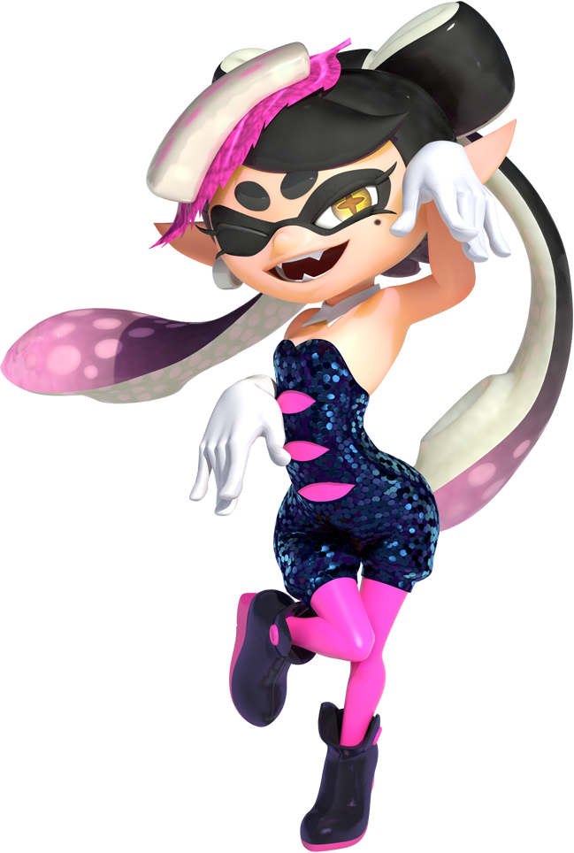

Personnages de Splatoon

Ayo
Popstar enthousiaste et membre du groupe Calamazones avec sa cousine Oly. Présentatrice de télévision avec cette dernière. Ensemble, elles annoncent les arènes disponibles pour les matchs et les Splatfests, événements où les Calamazones représentent 2 camps opposés et donnent un concert sur la place principale. Agent 1 du nouvel escadron Espadon dirigé par leur grand-père, l'Amiral Macalamar.